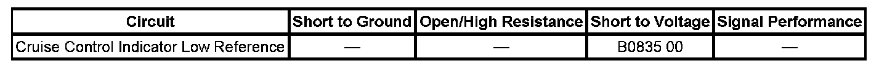

B0835
DTC B0835
DTC DESCRIPTOR
DTC B0835 00
Cruise Control System Active Indicator Circuit
DIAGNOSTIC FAULT INFORMATION

Perform the Diagnostic System Check - Vehicle prior to using this diagnostic procedure. Initial Inspection and Diagnostic Overview
CIRCUIT/SYSTEM DESCRIPTION
The body control module (BCM) monitors the cruise control indicator switch. When the cruise on/off switch is pressed ON, the cruise control switch is closed and the signal circuit is low. When the cruise on/off switch is pressed OFF, the cruise control switch is open and the signal circuit is high.
CONDITIONS FOR RUNNING THE DTC
The ignition is ON.
CONDITIONS FOR SETTING THE DTC
- The BCM detects excessive current in the cruise control/heated wheel indicator signal circuit.
- The above condition is present for greater than 5 seconds.
ACTION TAKEN WHEN THE DTC SETS
- The BCM stores DTC B0835 in memory.
- The cruise control system becomes inoperative.
CONDITIONS FOR CLEARING THE DTC
- The DTC becomes history when the conditions for setting the DTC are no longer present.
- The history DTC clears after 50 malfunction-free warm-up cycles.
- The BCM receives a clear code command from the scan tool.
DIAGNOSTIC AIDS
Using the Failure Records data may help locate an intermittent condition. If you cannot duplicate the DTC, the information in the Failure Records can help determine how many miles since the DTC set. The Fail Counter and Pass Counter can help determine how many ignition cycles that the diagnostic test reported a pass and/or a fail.
CIRCUIT/SYSTEM VERIFICATION
Ignition ON, observe the scan tool Cruise Control Switch parameter while pressing the cruise control switch ON and OFF. The reading should change between ON and OFF.
CIRCUIT/SYSTEM TESTING
1. Ignition OFF, disconnect the cruise control switch assembly.
2. Ignition ON, verify that a test lamp illuminates between the cruise control/heated wheel indicator signal circuit and ground.
- If the test lamp does not illuminate, replace the cruise control switch assembly.
3. Repair the short to voltage in the cruise control/heated wheel indicator signal circuit.
- If the circuit tests normal, replace the BCM.
REPAIR INSTRUCTIONS
Perform the Diagnostic Repair Verification after completing the diagnostic procedure.
- Steering Wheel Control Switch Assembly Replacement
- Control Module References for BCM replacement, setup, and programming. Programming and Relearning Verification Tests